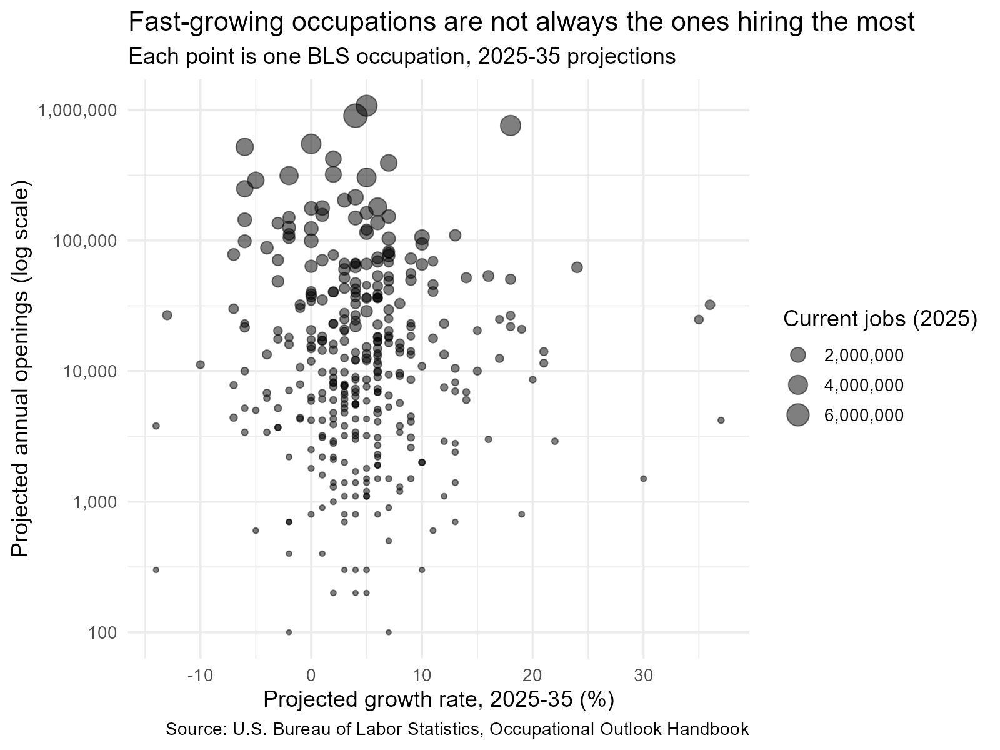
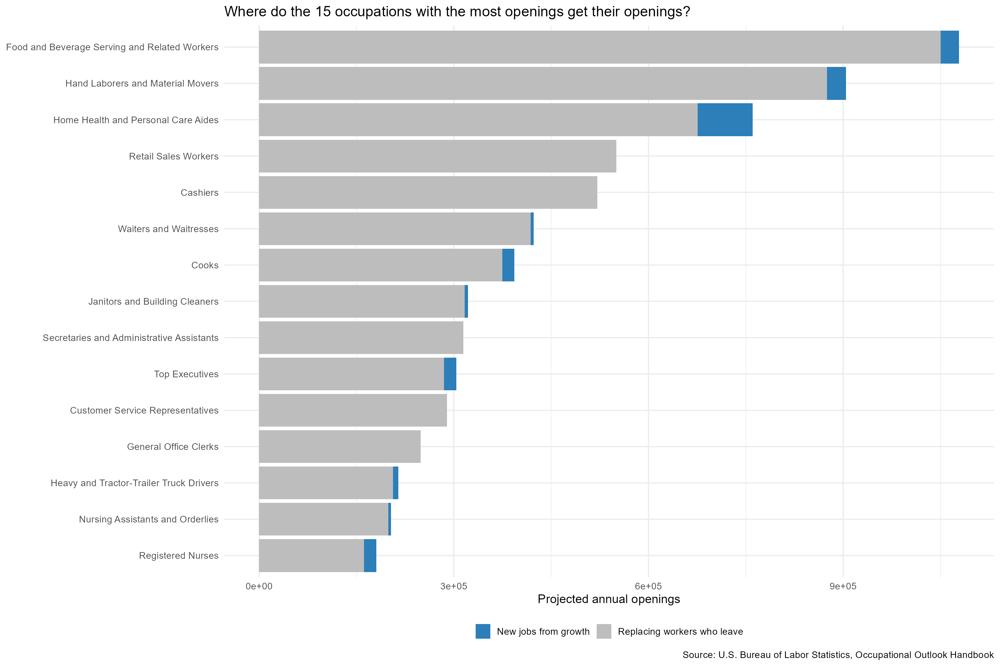

| Education | Occupation | Median pay ($) | Growth (%) | Annual openings | Opening rate (%) |
|---|---|---|---|---|---|
| Associate’s degree | Agricultural and Food Science Technicians | 51160 | 5 | 5900 | 14.6 |
| Associate’s degree | Environmental Science and Protection Technicians | 55090 | 7 | 5300 | 14.6 |
| Associate’s degree | Geological and Hydrologic Technicians | 57150 | 2 | 1400 | 13.6 |
| Associate’s degree | Nuclear Technicians | 110240 | 1 | 900 | 13.4 |
| Associate’s degree | Chemical Technicians | 60390 | 5 | 7600 | 12.7 |
| Bachelor’s degree | Forensic Science Technicians | 72060 | 13 | 2800 | 13.9 |
| Bachelor’s degree | Biological Technicians | 57510 | 7 | 9400 | 12.6 |
| Bachelor’s degree | Entertainment and Recreation Managers | 79520 | 6 | 5100 | 11.6 |
| Bachelor’s degree | Logisticians | 82320 | 18 | 26600 | 10.4 |
| Bachelor’s degree | Health Education Specialists | 64070 | 6 | 6900 | 9.8 |
| Doctoral or professional degree | Biochemists and Biophysicists | 127410 | 12 | 2900 | 8.2 |
| Doctoral or professional degree | Physicists and Astronomers | 166880 | 7 | 1500 | 5.9 |
| Doctoral or professional degree | Medical Scientists | 103410 | 13 | 10500 | 5.8 |
| Doctoral or professional degree | Physical Therapists | 102760 | 12 | 13400 | 4.7 |
| Doctoral or professional degree | Optometrists | 136570 | 10 | 2000 | 4.4 |
| High school diploma or equivalent | Flight Attendants | 63580 | 9 | 18500 | 13.8 |
| High school diploma or equivalent | Solar Photovoltaic Installers | 53140 | 37 | 4200 | 13.5 |
| High school diploma or equivalent | Surveying and Mapping Technicians | 54240 | 6 | 6900 | 11.7 |
| High school diploma or equivalent | Chefs and Head Cooks | 62470 | 7 | 25200 | 11.4 |
| High school diploma or equivalent | Jewelers and Precious Stone and Metal Workers | 52540 | -3 | 3700 | 11.3 |
| Master’s degree | Substance Abuse, Behavioral Disorder, and Mental Health Counselors | 59350 | 18 | 50500 | 9.5 |
| Master’s degree | Instructional Coordinators | 77440 | 2 | 23100 | 9.3 |
| Master’s degree | Marriage and Family Therapists | 66940 | 14 | 6900 | 9.0 |
| Master’s degree | Librarians and Library Media Specialists | 68270 | 3 | 12600 | 8.9 |
| Master’s degree | Nurse Anesthetists, Nurse Midwives, and Nurse Practitioners | 134920 | 36 | 32200 | 8.1 |
| No formal educational credential | Musicians and Singers | 99424 | 0 | 17400 | 10.2 |
| No formal educational credential | Athletes and Sports Competitors | 66710 | 6 | 2200 | 9.6 |
| No formal educational credential | Oil and Gas Workers | 51650 | 2 | 9900 | 8.8 |
| No formal educational credential | Roofers | 55440 | 5 | 12000 | 7.2 |
| No formal educational credential | Flooring Installers and Tile and Stone Setters | 54390 | 4 | 6400 | 6.6 |
| Postsecondary nondegree award | Massage Therapists | 58450 | 15 | 20400 | 13.1 |
| Postsecondary nondegree award | Wind Turbine Technicians | 64120 | 30 | 1500 | 12.7 |
| Postsecondary nondegree award | Heavy and Tractor-Trailer Truck Drivers | 58640 | 4 | 214500 | 9.7 |
| Postsecondary nondegree award | Heating, Air Conditioning, and Refrigeration Mechanics and Installers | 61010 | 11 | 40600 | 9.2 |
| Postsecondary nondegree award | Court Reporters and Simultaneous Captioners | 72420 | 0 | 1800 | 9.0 |
| Some college, no degree | Actors | 60424 | 0 | 6300 | 9.3 |
Growth Rate vs. Annual Openings: Which One Tells You Where the Jobs Are?
web scraping
R
careers
rvest
The question
“Fastest-growing occupation” sounds like a good bet for a career or a major. But growth rate is a relative number – it tells you how fast an occupation is expanding, not how many people it will actually hire. What determines whether you can get a job is the number of annual openings, and a large share of those openings has nothing to do with growth at all: they come from replacing workers who retire, switch fields, or leave the workforce.
So across every occupation the U.S. Bureau of Labor Statistics tracks, how well does growth rate line up with annual openings? And if they disagree, which one should someone actually use when picking a field to train for?
Data and method
I scraped all 343 occupation profile pages from the BLS Occupational Outlook Handbook using rvest. The list of occupations came from the OOH’s own A-Z index, so nothing was hand-picked. For each occupation I pulled the median annual pay, current employment, the 2025-35 projected growth rate, the projected employment change, and the projected number of annual openings.
This is public government data with no login or paywall involved. Before scraping, I checked robots.txt and the BLS website policies. Two occupations (fishing workers and military careers) don’t publish a standard salary figure and were dropped; 341 occupations remain in the analysis.
The full scraping, cleaning, and analysis code is available here:
Growth and openings barely move together
Across the 341 occupations, the correlation between projected growth rate and projected annual openings is close to zero (Pearson -0.04, Spearman rank -0.01). Of the 20 fastest-growing occupations, only 1 also appears among the 20 occupations with the most annual openings.

The occupations with the highest growth rates – Solar Photovoltaic Installers (37%), Nurse Practitioners and similar roles (36%), Data Scientists (35%) – have annual openings in the thousands, not the hundreds of thousands. Meanwhile occupations like Food and Beverage Serving Workers or Retail Sales Workers, whose growth rates are unremarkable or even negative, post six-figure annual openings because they are simply enormous occupations to begin with. Growth rate describes the shape of an occupation’s trajectory; it says almost nothing about its scale.
Most openings aren’t from growth at all

Breaking down the 15 occupations with the most annual openings into “new jobs from growth” versus “replacing workers who leave” makes the point directly. For most of these occupations – Retail Sales Workers, Cashiers, Secretaries and Administrative Assistants, General Office Clerks – the blue “new jobs from growth” segment is barely visible. Nearly every opening in these fields exists because someone is leaving, not because the occupation is expanding.
Takeaway
Don’t pick a field just because its growth rate is high. Check the annual openings number too — that’s how many people actually get hired each year. A fast-growing field can still be small and hard to break into. A slow-growing field can still hire a lot of people every year, just because it’s big.
The table below lists, for each typical entry-level education level, the occupations that pay above the U.S. median wage ($50,980) and have the highest opening rate (openings as a share of current employment).
Limitations
These numbers are national averages. Actual demand can be very different by state or city. 36 occupations don’t have one clear education level (they’re broad groups, like “Water Transportation Occupations”). I left them out of the education table, but they’re still in the correlation numbers above.